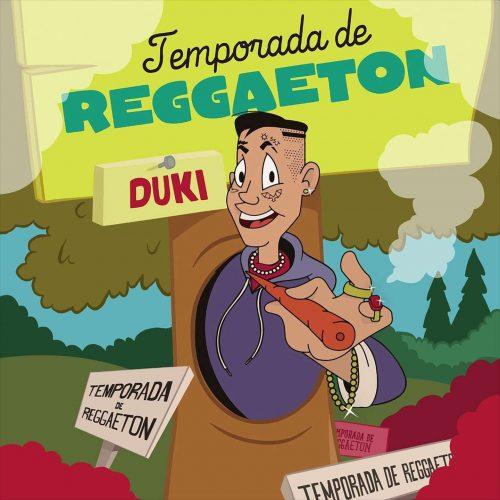
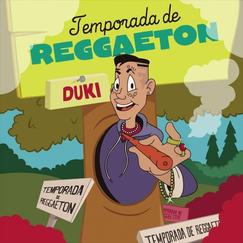
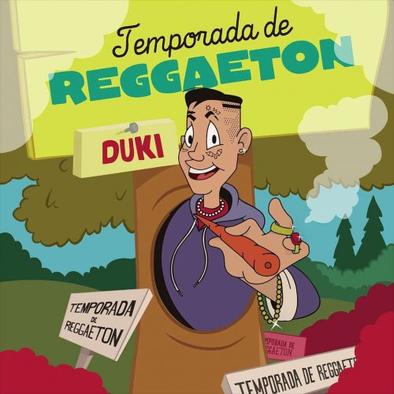

Álbumes y Fotos


 

Duki o Mauro Ezequiel Lombardo Quiroga, es un rapero y cantante argentino nacido el 24 de junio de 1996 en Buenos Aires. Se hizo famoso en la escena del trap y el rap latinoamericano, destacándose por su estilo único y su habilidad para improvisar.
Su carrera despegó en 2017 con la publicación de su mixtape "No Vendo Trap" y rápidamente se convirtió en una figura prominente en la música urbana. Es conocido por sus letras que combinan temas de amor, vida callejera y superación, y ha colaborado con varios artistas destacados de la región, como KHEA, Ysy A y Nicki Nicole.
Duki también ha sido pionero en la incorporación de elementos del trap argentino, fusionando ritmos y estilos. Su energía en el escenario y su conexión con el público han consolidado su popularidad, convirtiéndolo en uno de los exponentes más importantes del género en América Latina. Además, ha logrado éxitos en plataformas de streaming, alcanzando millones de reproducciones en sus canciones.
En resumen, Duki es un referente del trap en Argentina y continúa influyendo en la música urbana en español con su estilo innovador y auténtico.
